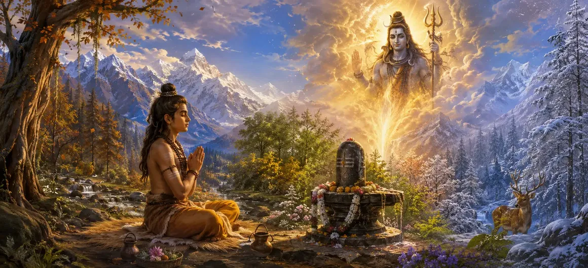

उपमन्यु की तपस्या
वायवीय संहिता का चौंतीसवाँ अध्याय ऋषि उपमन्यु की गहन आध्यात्मिक तपस्या और सर्वोच्च भक्ति का वर्णन करता है।
ऋषि वायु बताते हैं कि कैसे उपमन्यु ने भगवान शिव की कृपा और दर्शन प्राप्त करने के लिए अटूट तपस्या की।
यह अध्याय आध्यात्मिक जीवन में एकाग्र ध्यान और पूर्ण समर्पण की शक्ति के चमकदार प्रमाण के रूप में कार्य करता है।
अध्याय 34 की मुख्य बातें
घोर तपस्या
ऋषि उपमन्यु द्वारा अभ्यास किए गए कठोर आध्यात्मिक अनुशासन को दर्शाता है।
अटल फोकस
कठिन परीक्षाओं के बीच भी भक्त के दृढ़ संकल्प को उजागर करता है।
मंत्र अवशोषण
शिव के पवित्र नामों के निरंतर स्मरण और जप पर जोर देता है।
भक्ति का परीक्षण
यह दर्शाता है कि सच्ची भक्ति कैसे सभी बाधाओं और परीक्षणों का सामना करती है।
ईश्वरीय कृपा
भगवान शिव के आशीर्वाद की चरम अभिव्यक्ति के लिए जमीन तैयार करता है।
कथा प्रवाह
उपमन्यु की कहानी को कवर करते हुए अध्याय 35 में आसानी से आगे बढ़ता है।
इस अध्याय में मुख्य विषय
उपमन्यु की तपस्या प्रारम्भ
ऋषि वायु ने यह बताना शुरू किया कि कैसे युवा उपमन्यु, दिव्य शिक्षाओं से प्रेरित होकर, गहन तपस्या करने के लिए एक एकांत जंगल में चले गए।
उनका एकमात्र लक्ष्य भगवान महादेव की पूर्ण कृपा और दृष्टि प्राप्त करना था।
कठोर अनुशासन और कठोर तपस्या
उपमन्यु ने कठोर शारीरिक और मानसिक तपस्या की, अत्यधिक मौसम को सहन किया और लंबे समय तक उपवास किया।
वन जीवन की विकट चुनौतियों के बावजूद उनका समर्पण पूर्ण रहा।
निरंतर ध्यान और मंत्र जप
गहरे ध्यान में बैठे उपमन्यु ने अपने मन को भगवान शिव पर स्थिर रखते हुए लगातार पवित्र पंचाक्षर मंत्र का जाप किया।
प्रत्येक सांस परम प्रभु के प्रति शुद्ध भक्ति का प्रसाद बन गई।
परीक्षाओं को झेलना और बाधाओं पर काबू पाना
जैसे-जैसे उनकी तपस्या तीव्र होती गई, विभिन्न दैवीय परीक्षण और प्राकृतिक कठिनाइयाँ उनके संकल्प को हिलाती हुई दिखाई दीं।
उपमन्यु पर्वत की भाँति दृढ़ खड़ा रहा और उसने सिद्ध कर दिया कि शिव के प्रति सच्चे प्रेम को विपरीत परिस्थितियाँ डिगा नहीं सकतीं।
सर्वोच्च भक्ति का परिपक्व होना
अध्याय में वर्णन किया गया है कि कैसे उपमन्यु की उग्र तपस्या ने भगवान शिव के करुणा के लौकिक हृदय को पिघला दिया।
उनकी भक्ति अपने उच्चतम शिखर पर पहुंच गई, जिससे उनका संपूर्ण अस्तित्व दिव्य प्रेम के जीवंत मंदिर में बदल गया।
प्रायश्चित्त खाते का निष्कर्ष
अध्याय 34 नाटकीय दैवीय हस्तक्षेप और उसके बाद आने वाले आशीर्वाद के लिए मंच तैयार करके समाप्त होता है।
इकट्ठे हुए ऋषि-मुनि भगवान शिव के प्रकट होने की अद्भुत कथा सुनने के लिए उत्सुक होकर ध्यान से सुनते हैं।
अध्याय 35 की ओर
अध्याय 34 में वर्णित तपस्या के बाद, ऋषि वायु अध्याय 35, 'उपमन्यु की कहानी' सुनाने की तैयारी करते हैं।
अगला अध्याय भगवान शिव द्वारा उपमन्यु को दिए गए गहन परीक्षणों, दिव्य परीक्षणों और परम आशीर्वाद का खुलासा करता है।
अध्याय 34 की मुख्य शिक्षाएँ
दृढ़ संकल्प
पूर्ण समर्पण सभी बाहरी कठिनाइयों पर विजय प्राप्त करता है।
तपस्या और फोकस
कठोर तपस्या से मन शुद्ध होता है और उच्च चेतना जागृत होती है।
निरंतर जप
शिव का निरंतर स्मरण आत्मा को शांति प्रदान करता है।
परीक्षण का समय
साधना में प्रतिकूलता सच्चे समर्पण की परीक्षा है।
दिव्य ग्रहणशीलता
गहन भक्ति हृदय को दैवीय कृपा का पात्र बनाती है।
अगला आख्यान
सीधे अध्याय 35 में उपमन्यु की चमत्कारी कहानी में प्रवाहित होता है।
आध्यात्मिक चिंतन
उपमन्यु की तपस्या हमें सिखाती है कि सच्ची आध्यात्मिक प्राप्ति के लिए अटूट धैर्य, उग्र दृढ़ संकल्प और दिव्य प्रेम की आवश्यकता होती है जो सभी सांसारिक कष्टों से परे हो।
अध्याय 34 का संदेश जीना
जीवन की परीक्षाओं और आध्यात्मिक बाधाओं का साहस और दृढ़ विश्वास के साथ सामना करें।
अपने सभी दैनिक कार्यों में परमात्मा का निरंतर स्मरण बनाए रखें।
अपनी भक्ति प्रथाओं में गहरा धैर्य और ईमानदारी विकसित करें।
प्रमुख आध्यात्मिक अवधारणाएँ
ऋषि उपमन्यु द्वारा घोर तपस्या
आध्यात्मिक खोज में अटल संकल्प.
भक्त की साधना की कठोर परीक्षा।
परम भक्ति का पकना और परिपक्व होना।
भगवान शिव के ध्यान में पूर्ण तल्लीनता।
अध्याय 35 में उपमन्यु की पूरी कहानी की प्रस्तावना।
अध्याय सारांश
वायवीय संहिता अध्याय 34 उपमन्यु की तपस्या प्रस्तुत करता है। ऋषि उपमन्यु की कठोर तपस्या, अटूट ध्यान, निरंतर मंत्र ध्यान और परीक्षण-प्रतिरोधी भक्ति का वर्णन करते हुए, यह अध्याय सर्वोच्च समर्पण के मार्ग पर प्रकाश डालता है। यह पाठक को अध्याय 35, 'उपमन्यु की कहानी' के लिए तैयार करता है।
अक्सर पूछे जाने वाले प्रश्न
1. वायवीय संहिता अध्याय 34 का प्राथमिक विषय क्या है?
अध्याय 34 में भगवान शिव को प्रसन्न करने के लिए ऋषि उपमन्यु द्वारा की गई गहन आध्यात्मिक तपस्या, तपस्या और सर्वोच्च भक्ति का विवरण दिया गया है।
2. शिव पुराण के संदर्भ में ऋषि उपमन्यु कौन हैं?
ऋषि उपमन्यु भगवान शिव के एक महान भक्त हैं जो अपनी अटूट दृढ़ता, गहरी तल्लीनता और अंतिम अनुभूति के लिए प्रसिद्ध हैं।
3. उपमन्यु की तपस्या की कथा कौन सुनाता है?
ऋषि वायु ने वायवीय संहिता में एकत्रित ऋषियों को उपमन्यु की तपस्या का गौरवशाली वृत्तांत सुनाया।
4. उपमन्यु की तपस्या से क्या प्रमुख शिक्षा मिलती है?
यह सिखाता है कि पूर्ण दृढ़ता, एकचित्त भक्ति और पूर्ण समर्पण सभी बाधाओं पर विजय प्राप्त करते हैं और भगवान शिव की कृपा प्राप्त करते हैं।
5. अध्याय 34 के बाद नेविगेशन के लिए अगला अध्याय कौन सा है?
नेविगेशन के लिए अगले अध्याय का शीर्षक 'उपमन्यु की कहानी' है।
"गहन तपस्या और शुद्ध भक्ति की अग्नि भट्टी के माध्यम से, ऋषि उपमन्यु ने साबित कर दिया कि भगवान शिव की कृपा अटूट संकल्प से प्राप्त की जा सकती है।"
वायवीय संहिता के माध्यम से जारी रखें
अध्याय 34 उपमन्यु की तपस्या का समापन करता है। उपमन्यु की कहानी जारी रखें।